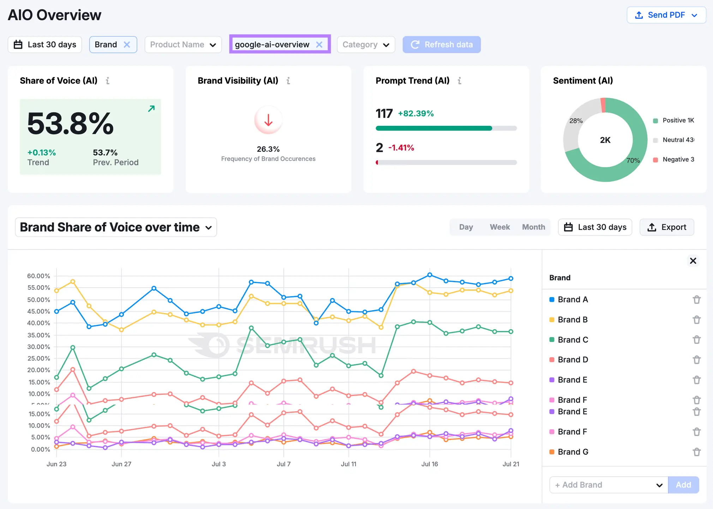
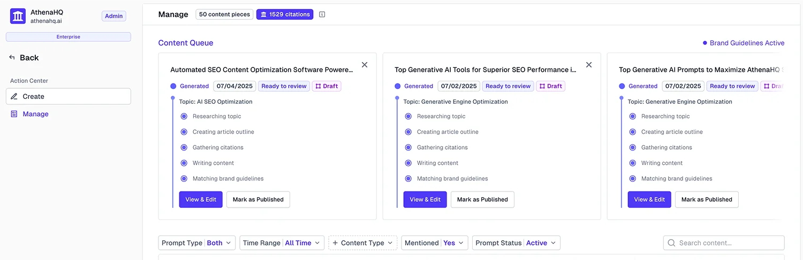

The search box stopped being the destination. AI answers now sit between your buyer and your site, and when someone asks ChatGPT, Perplexity, Gemini, Copilot, or Google's AI Overviews for the best choice, they get a synthesized answer with a handful of citations. If your brand isn't in that answer, described correctly, and backed by sources the model trusts, you lose the moment of consideration before the click ever exists.
I spent the last few months running controlled prompt panels, reviewing answer snapshots across engines, and pressure-testing platforms with client scenarios. This list is my take on the AEO tool market from a growth lens. It follows a simple standard: does the tool help you measure answer presence and change it with a believable path to action.
How I reviewed
- Coverage. Tracks the AI surfaces that matter today.
- Clarity. Explains why an engine answered a certain way and which sources shaped it.
- Action. Turns findings into edits, briefs, outreach, or structured updates.
- Cost-to-impact. You should feel a line between spend and visibility.
1. Goodie AI

Quick description
Full-stack AEO built to monitor your presence in AI answers and push fixes through an optimization hub. Coverage includes ChatGPT, Perplexity, Gemini, Google AI Overviews and more, with workflows to improve on-site content and the third-party sources models cite.
Pros
- Purpose-built for answer engines, not just classic SEO. Clear monitor-to-action flow.
- Education and playbooks that help non-specialists move.
Cons
- Pricing is sales-led, so trials need a demo.
- Fewer public case studies than older SEO suites.
Funding: No external funding listed publicly.
Location: New York, USA.
Pricing: Quote based. Request a demo.
Customers: Selective references; ask for vertical examples.
My rating: 4.6/5. I’m slightly biased toward Goodie because it reduces tool sprawl while giving a clear path from visibility gap to fix. Bias aside, it performs.
2. HubSpot AEO Grader (free)

Quick description
A free, one-time read on how you show up in AI answers. The AEO Grader runs prompts across ChatGPT, Perplexity, and Gemini and scores you across brand recognition, market presence, presence quality, and brand sentiment. It's the fastest way to solve the problem before you spend anything. If you want ongoing tracking, HubSpot now sells a paid tier, HubSpot AEO, for $50/month that turns the snapshot into always-on monitoring.
Pros
- Free, fast, and genuinely useful for initial diagnostics.
- Clear scoring and competitive context
Cons
- The free Grader is a snapshot, not a monitor. For continuous tracking you'll need the paid tier.
- Coverage focuses on a few major engines: ChatGPT, Perplexity, Gemini.
Funding: Public company.
Location: Cambridge, MA, USA.
Pricing: AEO Grader is free. Ongoing monitoring via HubSpot AEO runs $50/month
Customers: N/A for the free tool.
My rating: 4.2/5. Use it to establish a baseline, then graduate to a full platform once you see the opportunity.
3. Scout by Yext

Quick description
An AI search and competitive intelligence agent that measures presence, sentiment, and share of voice across search and AI platforms, with recommendations and direct ties into Yext’s Content, Listings, Pages, and Reviews for execution.
Pros
- Lives inside a mature enterprise stack that already handles listings and reviews. Clear framing around presence, sentiment, and comparative position.
- Recently opened up. Scout MCP and Scout API launched in May 2026, exposing its dataset to partners and agentic workflows.
Cons
- Details on AEO-specific depth are lighter on public pages than pure-play tools.
- Enterprise-only, sales-led pricing bundled per location.
Funding: Public company, NYSE: YEXT.
Location: New York, USA.
Pricing: Quote based.
Customers: Large multi-location brands via Yext’s broader platform.
My rating: 4.1/5. A safe pick if you're a multi-location brand that wants AEO measurement wired directly into listings and reviews.
4. Semrush (Semrush One + AI Visibility Toolkit)

Quick description
Semrush rebuilt its AEO offering in late 2025. The core product is now the AI Visibility Toolkit — prompt tracking, share of voice, competitor visibility, and an AI site audit across ChatGPT, Gemini, Perplexity, and Google AI Overviews and AI Mode. It's sold standalone or bundled into Semrush One, which puts AI visibility and the classic SEO suite in one subscription.
Pros
- The most complete AEO suite from a legacy SEO vendor; slots into a platform your team already knows.
- Real consolidation — AI data and traditional SEO data report from one place.
Cons
- Priced per user. The toolkit is $99/month per seat, so a team of three is ~$297/month for AI tracking alone.
- More platform than you need if AI visibility is the only job.
Funding: Acquired by Adobe (Nasdaq: ADBE) in April 2026; now an Adobe subsidiary.
Location: US presence in Boston and global offices.
Pricing: AI Visibility Toolkit: $99/month per user. Semrush One: from $199/month. Enterprise AIO: custom quote.
Customers: Broad enterprise base across categories.
My rating: 4.0 /5. The right call if you want one operating system for SEO and AI visibility. If you only care about AI mentions, start with a focused tool.
5. Contently

Quick description
Contently is an enterprise content platform that's added an AEO layer aimed at winning citations, not just rankings. Its AI SEO visibility offering pairs structural content fixes — lead-paragraph claim isolation, FAQ generation, JSON-LD schema, source-attribution markup — with weekly citation tracking across ChatGPT, Perplexity, Gemini, and Google AI Overviews. It's less a monitoring dashboard and more a way to produce content built to be quoted, backed by a large vetted creator network.
Pros
- Enterprise workflows, governance, and analytics built for content operations.
- Deep case studies that show impact on search and content ROI.
Cons
- Built for enterprise content operations and priced to match; overkill if you only want AI visibility tracking.
- Sales-led pricing. No public plans.
Funding: Private company; venture-backed.
Location: US based with enterprise focus.
Pricing: Quote based.
Customers: Enterprise brands across finance, tech, and retail in published case studies.
My rating: 4.0/5. Not AEO analytics, but excellent infrastructure for the content that fuels AEO wins.
6. Ahrefs Brand Radar

Quick description
Brand Radar tracks how AI describes your brand across six engines (ChatGPT, Perplexity, Gemini, Copilot, Google AI Overviews, and Google AI Mode) running on Ahrefs' database of 240M+ search-backed prompts. Adds impression-weighted visibility, topics that move AI traffic, and simple competitor views. Lives inside Ahrefs, which reduces adoption friction for SEO-led teams.
Pros
- Familiar stack with large datasets and clear visualizations.
- Big prompt database and clean visualizations that are easy to put in front of a CMO.
Cons
- Pricing stacks fast, and it's no longer the free beta it launched as.
- Documented accuracy concerns in independent reviews, and no Claude or Grok coverage.
Funding: Bootstrapped; privately held.
Location: Singapore HQ.
Pricing: $199/month
Customers: Global SEO teams across many industries.
My rating: 3.7/5. If your team already lives in Ahrefs, it's the path of least resistance into AEO measurement. But it isn't cheap anymore, the coverage has holes, and I'd verify its mention counts against a manual check before building a board report on them.
7. Airank

Quick description
AIRank is one of the few tools here that tries to fix, not just measure. It runs a 47-point audit, tracks daily citations across ChatGPT, Claude, Perplexity, and Gemini, then ships HTML fixes through an edge worker — preview the diff, apply in one click, auto-rollback if a change regresses. Installs on WordPress, Shopify, Next.js, or a JS snippet.
Pros
- Action-oriented — aims to close the loop between finding a gap and fixing it, not just flagging it.
- Claims AI agent support for remediation as the product matures.
Cons
- New and unproven; no independent reviews, and its performance numbers are self-reported.
- The auto-rewrite is powerful but risky; test it on a low-stakes page first.
Funding: Not disclosed.
Location: Not listed.
Pricing: Free scan. Solo $29/mo, Pro $49/mo, Scale $199/mo; Enterprise custom.
Customers: Not listed.
My rating: 3.5/5. Interesting for experimentation. I wouldn’t anchor executive reporting on it yet.
8. SEO Scout

Quick description
SEO Scout is a content and keyword optimization tool, not a dedicated AEO monitor. Its useful angle for answer-engine work is the NLP topic and entity research — it maps the entities and related terms top-ranking pages cover, so you can structure content the way both search and AI systems expect.
Pros
- Entity and topic suggestions inside a simple writing assistant.
- Transparent, low starting price.
Cons
- Built for traditional SEO; it doesn't track AI citations or share of voice across engines.
- Smaller ecosystem around AEO use cases.
Funding: Private.
Location: UK.
Pricing: Plans starting around $49 per month with a 7-day trial.
Customers: SMBs, consultants, and content teams.
My rating: 3.7/5. A practical sidekick for improving “answerability” of content you already plan to publish.
9. Athena

Quick description
Prompt-level monitoring with citation intelligence and an action center. Tracks presence and sentiment across ChatGPT, Perplexity, Google AI Overviews and more, then turns findings into tasks. Clear packaging with credits and unlimited seats.
Pros
- Straightforward dashboards for visibility and impersonation monitoring.
- Transparent plans and credits, plus published examples of starting price in reviews.
Cons
- Younger than legacy SEO suites.
- Credit-based pricing makes the real bill less predictable than the sticker price; heavier monitoring burns credits faster.
Funding: ~$2.2M; Y Combinator and angel investors.
Location: San Francisco, CA, USA.
Pricing: Self-Serve $295/month, Enterprise custom. No free trial.
Customers: Logos and references on the site and reviews.
My rating: 4.1/5. Strong value for teams that want to operationalize AEO quickly.
How to choose the right AEO stack
If you want one system to measure and fix
Pick an all-in-one like Goodie or Athena that turns answer snapshots into structured tasks and outreach.
If you want AEO inside the suite you already use
Turn on Ahrefs Brand Radar and its AI indexes or run Semrush Enterprise AIO with an App Center add-on like Otterly.
If you need content infrastructure
Use Contently for workflow, governance, and production at scale, then feed those assets into your AEO monitor.
If you are testing on a budget
Run HubSpot’s free grader to find gaps, then use SEO Scout to harden pages and entities. Add a paid monitor when you are ready.
What to measure in your first 30 days
These are the four metrics worth tracking when you first wire up an AI visibility tool or any AEO platform.
- Share of Answer and Mention Rate by engine. Do not confuse rankings with inclusion. Start with ChatGPT and AI Overviews, then add Perplexity, Gemini, and Copilot. Semrush’s AIO research gives helpful context on where AIOs appear.
- Citation sources the engines rely on. If AI keeps citing a competitor’s comparison, fix your own and pitch updates to that page. Ahrefs and Yext expose the domains and topics driving visibility.
- Sentiment and correctness at the answer level. HubSpot’s grader includes this, and it is a quick win to fix factual errors.
- Volatility of answers. Weekly sampling beats monthly in most categories. Semrush’s large-scale AIO studies show how dynamic appearances are.
Buyer checklist
- Engine coverage. Track the engines your buyers use now, not just the easy ones.
- Explainability. Can you see the sources and “why,” not just a score.
- Action layer. Does the tool route improvements into briefs, edits, and outreach in the same workflow.
- Cost clarity. Know how AI indexes or credits are billed and how often data refreshes. Ahrefs lists per-index add-ons on its pricing page, and some vendors adjust pricing in posts over time. Verify before you commit.
My quick picks
- Best overall AEO platform: Goodie AI for monitor-to-optimize flow with broad engine coverage.
- Best free baseline: HubSpot AEO Grader to size the problem quickly.
- Best AEO inside an SEO suite: Ahrefs Brand Radar.
- Best enterprise backbone: Semrush Enterprise AIO with Otterly from the App Center.
The space is moving fast. What qualifies as a full AEO stack in 2026 would have been a research project in 2024. If you're not monitoring how AI search is representing your brand right now, you're flying blind on the channel that's increasingly driving first-touch consideration. Start somewhere — even the free grader — and build from there.
Curious what's working for you? If you're running any of these tools and want to compare notes, reach out.